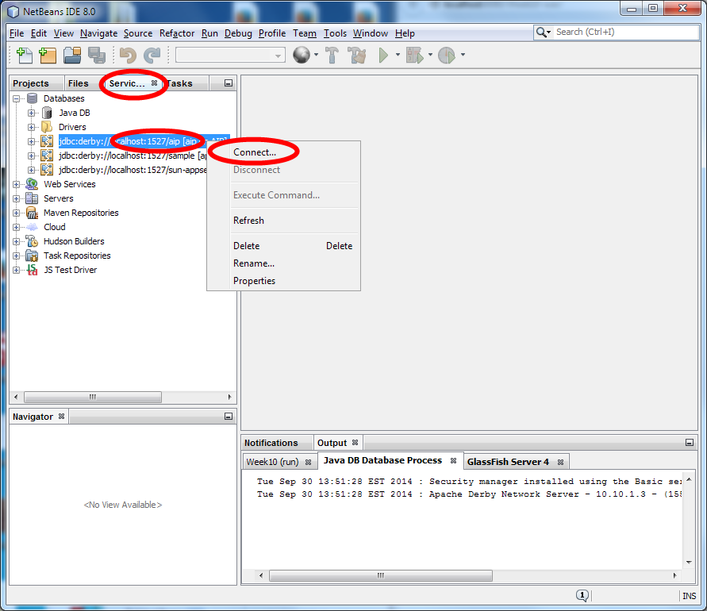
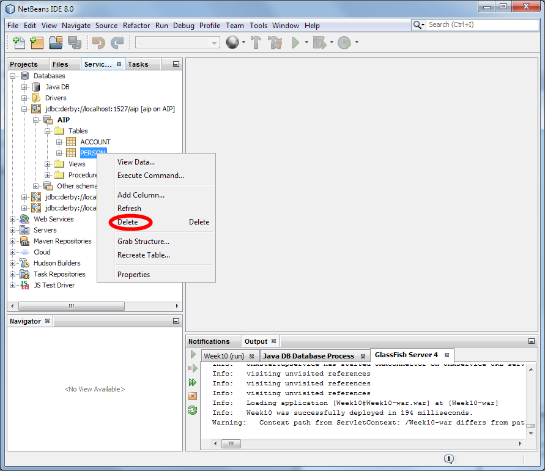

In this exercise you will create an address book application using JPA.
Create an Enterprise Application
During the last tutorial, you created an Enterprise Application called Week8.
Having EJBs in a separate project is "best" practice. It helps enforce separation between presentation and domain logic. In previous Java EE versions, this separation was mandatory. However, Java EE 6 introduced the ability to include EJBs in WAR files. For simple projects, placing all files in a single WAR may be more practical. However, for the sake of this exercise we will use two separate projects within an Enterprise Application (a total of three projects).
This week, you should create a new Enterprise Application called Week9. Be careful! Last week's tutorial may have changed the default location. Make sure the project location is your NetBeansProjects folder and NOT NetBeansProjects/Week8.
- Create a new project of type "Enterprise Application" in the "Java EE" category.
- Name the project Week9 and ensure that the "Project Location" is correct.
- Use GlassFish as your server and leave the option to create Week9-ejb and Week9-war checked.
Before continuing, you should start your database and GlassFish. The easy way to do this is to right click on your Week9 Enterprise Application and click on "Run".
Important Tip
During the Week 8 tutorial, I provided some suggestions for building and running your project. I repeat those suggestions here:
Java EE 7 allows you to deploy EJBs using a WAR or an EAR file. In NetBeans, this means that even though your Week9-war is only part of your Enterprise Application, you are still able to run Week9-war directly.
This can result in problems when/if the same EJB is deployed twice. I recommend only deploying or running your application via the Week9 enterprise application.
This means that if you want to run your project, you should NOT run individual JSF (xhtml) files. Instead, you should right click on, and run, the Week9 Enterprise Application. Avoid using the large green "play" button in NetBeans as it may not run the project that you are intending to run.
If you are experiencing problems with NetBeans and/or GlassFish, here are some steps you might try to resolve the problem:
- Deploy the Enterprise Application again. Right click on the Enterprise Application (e.g., Week9) and then click "Deploy".
- Undeploy all applications. In the Services tab, locate Servers > GlassFish Server > Applications. Right click on Applications to refresh the list. Select all the Applications with your mouse (hold down the shift key). Then right click and select "Undeploy".
- Restart GlassFish. If you are seeing error messages about NetBeans being unable to delete JAR files, then you should undeploy all applications and restart GlassFish. To restart GlassFish, in the Services tab locate Servers > GlassFish Server. Then, right click on GlassFish Server and select Restart (or Stop and then Start).
Ensure your Database is Configured
In the Week 5 labs, you created a database called "aip". You used the GlassFish admin console to configured it as a JNDI resource named jdbc/aip.
Please check that you still have this database and JNDI name configured. If you do not have these configured, you should refer to the exercises from the Week 5 labs. Follow the note titled "Create Database" to set up the aip database. Follow the note "Container Managed Connections" to configure a Connection pool and JNDI resource named "jdbc/aip".
In NetBeans, check the tables in the AIP database. There may be one or more tables already in the database. This is fine. However, if you have created a table named "Person" or "ContactMethod", then please delete (i.e., drop) those tables because we will be creating new tables with those names.
You do not need to delete Account or any other tables. Just make sure that there is no table named "Person" or "ContactMethod".
The two images below illustrate the process of connecting to the database and deleting an unwanted table.

